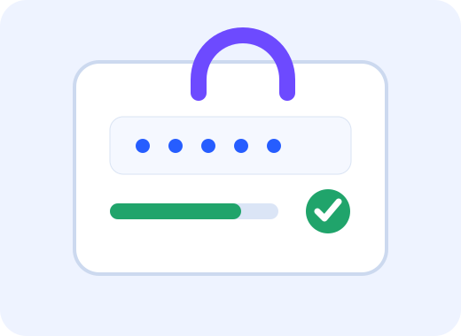

Módulo 1 · Protección de cuentas
Contraseñas más fuertes
Una buena contraseña combina longitud, variedad y poca previsibilidad. En esta página podés aprender los criterios y probarlos con ejemplos inventados.

¿Qué conviene hacer?
- ✓Elegir frases o combinaciones largas que sean difíciles de adivinar.
- ✓Usar contraseñas diferentes para cuentas importantes.
- ✓Combinar letras, números y símbolos cuando el servicio lo permita.
- ✓Activar un segundo factor de autenticación cuando esté disponible.
¿Qué conviene evitar?
- !Nombres, fechas de nacimiento o datos fáciles de relacionar con vos.
- !Secuencias como 123456, qwerty o palabras demasiado comunes.
- !Compartir contraseñas por mensajes o dejarlas visibles.
- !Reutilizar exactamente la misma contraseña en todos los servicios.
Actividad interactiva
Probá el analizador de fortaleza
Escribí una contraseña de ejemplo. La evaluación ocurre mientras escribís.
No ingreses una contraseña real. Este ejercicio es solo educativo.
Sin analizar · Escribí una contraseña de ejemplo para analizarla.
✓ Al menos 12 caracteres
✓ Una mayúscula
✓ Una minúscula
✓ Un número
✓ Un símbolo
✓ Sin patrones obvios
Privacidad: el analizador trabaja únicamente con JavaScript dentro de esta página. No guarda ni envía la contraseña que escribas. Aun así, usá solo ejemplos inventados.